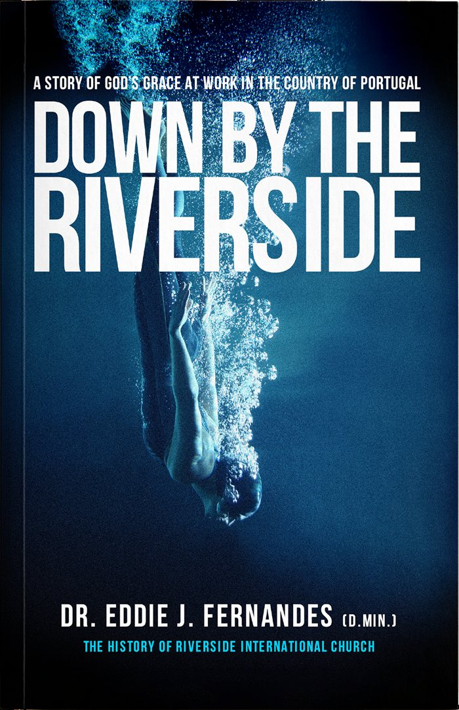

Down by the Riverside
A Story of God's Grace at Work in the Country of Portugal
God uses people to complete His purposes and fulfil His plan on this earth. When Jesus first came in the flesh, he asked the Apostle Peter: “… whom say ye that I am? And Simon Peter answered and said, Thou art the Christ, the Son of the living God.” (Matthew 16:15-16 – KJV). Peter was right and “…Jesus answered and said unto him, Blessed art thou, Simon Barjona: for flesh and blood hath not revealed it unto thee, but my Father which is in heaven. And I say also unto thee, That thou art Peter, and upon this rock I will build my church; and the gates of hell shall not prevail against it” (vv. 17-18). The revelation Peter received was that Christ was “the son of the living God.” Jesus went on to tell his disciples that it would be upon that Rock, which is and forever will be Christ Himself, that He would build His Church. The Apostle Paul expands, “…Jesus Christ Himself being the chief cornerstone, in whom the whole building, being fitted together, grows into a holy temple in the Lord, in whom you also are being built together for a dwelling place of God in the Spirit” (Ephesians 2:20-22 – KJV). Scripture leaves no room for doubt that Christ alone is the Rock, the Cornerstone, the Founder and the Foundation of the Church universal. The local church is the hope of the world! Like the moon, each local church reflects the light of the “Son of the living God” onto a dark and desperate world. This book is the story of one such church and how God used one family which multiplied into many families and individuals to bring help, healing and hope to a small county, then to a city, to a country, and as if in a ripple effect, to the world! (His)story, as experienced by this family, is filled with desperation and hope, defeat and victory, dark nights of the soul and seasons of glory. A pastor is married to the local church. Much like any marriage of a quarter century, there are ups and downs, good and bad times; yet, persistence, commitment and sacrificial love matures both pastor and people and the rewards are beautiful and bountiful. This book unpacks the adventure of faith of a family of four that became a family of thousands spread across the globe; one small house church that blossomed into a federation of churches which continues to take the love and the light of “Christ, the Son of the living God” to all who are receptive to the message of God’s salvation in Christ.